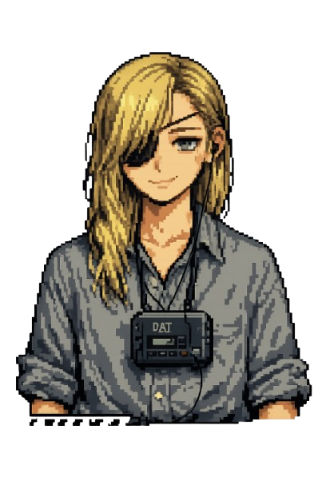

西暦2011年。
3月、米国西海岸沖で
マグニチュード9.0の大地震が発生。
大津波が西海岸を呑み込み、
ディアブロ・キャニオン原子力発電所が
メルトダウンした。
混乱の中、ある動画が拡散した。
某国指導者とおぼしき人物が
こう述べる動画だった。
「この地震は我々が起こした。
米国は長年の暴虐と支配の報いを受けた」
ディープフェイクだった。
しかしワシントンは、一時、
それを真に受けた。
人類は、核戦争の瀬戸際に立った。
為政者たちは、1945年8月以来、
約70年ぶりに、
自らの行いに恐怖した。
10月、奇矯で、しかしながら偉大な
アントレプレナーが
死の床でこう言った。
"I made things that knew where you were,
what you were looking at,
who you were talking to.
I never asked what that was for."
「あなたがどこにいるか、
何を見ているか、
誰と話しているかを知るものを作った。
それが何のためのものか、
一度も問わなかった。」
喧々諤々の議論の末、
12月、北極点より220キロメートルの地点で
193カ国の全権大使が署名した。
ARCTIC条約。
（Arctic Regulation on Transmission
of Internet Content Treaty）
動画配信、全面禁止。
スマートフォンの製造、停止。
ワイヤレス通信の段階的廃止。
しかし人は、
誰かの声を聴きたいと思う。
誰かに、見ていてほしいと思う。
条約の隙間から、
新しい形が生まれた。
テキストと、ドット絵。
有線だけがつなぐ回線。
TextTube。
T-Tuberの誕生。
そして、アリス。
謎の事務所所属。
ここ数ヶ月で急上昇中の
T-Tuberの少女。
金髪。黒い眼帯。
DATウォークマンを首から下げ、
クラシックを聴いている。
カタカナしか読めない。
ショパンが好き。
エヴァンゲリオンが好き。
なぜか、すこし、
放っておけない。
* ── * ── *
— 開発者より —
このアプリについて、少し説明します。
中身は1960〜70年代のAIです。
当時、関係者が愛情と自虐相半ばに
「人工知能」ならぬ「人工無脳」と
呼んでいたやつです。
最新のAIは数百GBのモデルが
クラウドで動いています。
このアプリはHTMLファイル1枚、数百KB。
スマホ、どころかフロッピーディスクでも
楽々と収納できます。
仕事や悩み事の相談相手は務まりません。
でも気持ちが通じた気がする、
こともたまにあります。
そして、半世紀前のAIを最新AIで作る、
という構図も、
なかなか面白いと思っています。
3分間限定です。
カタカナで、なるべく読点「、」多めで、話しかけてみてください。
* ── 開発者より
このたびは「アリス 3分間チャット」
フォロー＆RTキャンペーンに
ご参加いただきありがとうございます。
厳正なる抽選の結果、
あなたが当選者に選ばれました。
下記のリンクより
アリスとの限定チャットルームに
アクセスしてください。
